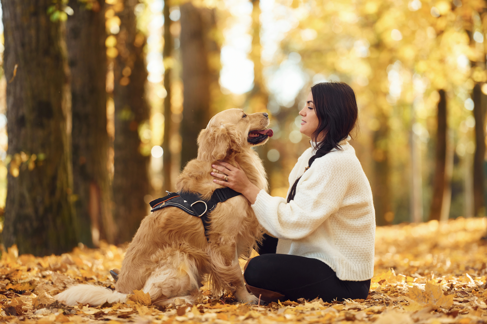

Canine Cavalry
Application Process

Application Requirements for Service Dogs:
Military Service: Applicants must be honorably discharged military veterans.
Documentation: Proof of military service, honorable discharge, and disability is required, along with completed questionnaires from a primary care and/or licensed mental health provider.
Age: Applicants must be at least 18 years old. Veterans under 18 may be considered if their disability requires a service dog.
Home Environment: You must have a stable, safe, and clean home environment, with at least six months of residency at your current location.
Financial Resources: You must have the financial ability to care for a service dog for its lifetime, including expenses for food, veterinary care, and medications.
Criminal Record: Applicants must have no history of animal abuse or neglect convictions or accusations.
Commitment to Training: You must be willing to attend a three-week onsite team training class to learn to work with your companion dog.
Support: Applicants must have one person as a secondary support to assist in care of the service dog. This person will go through an approval process and complete the onsite training class with the applicant.